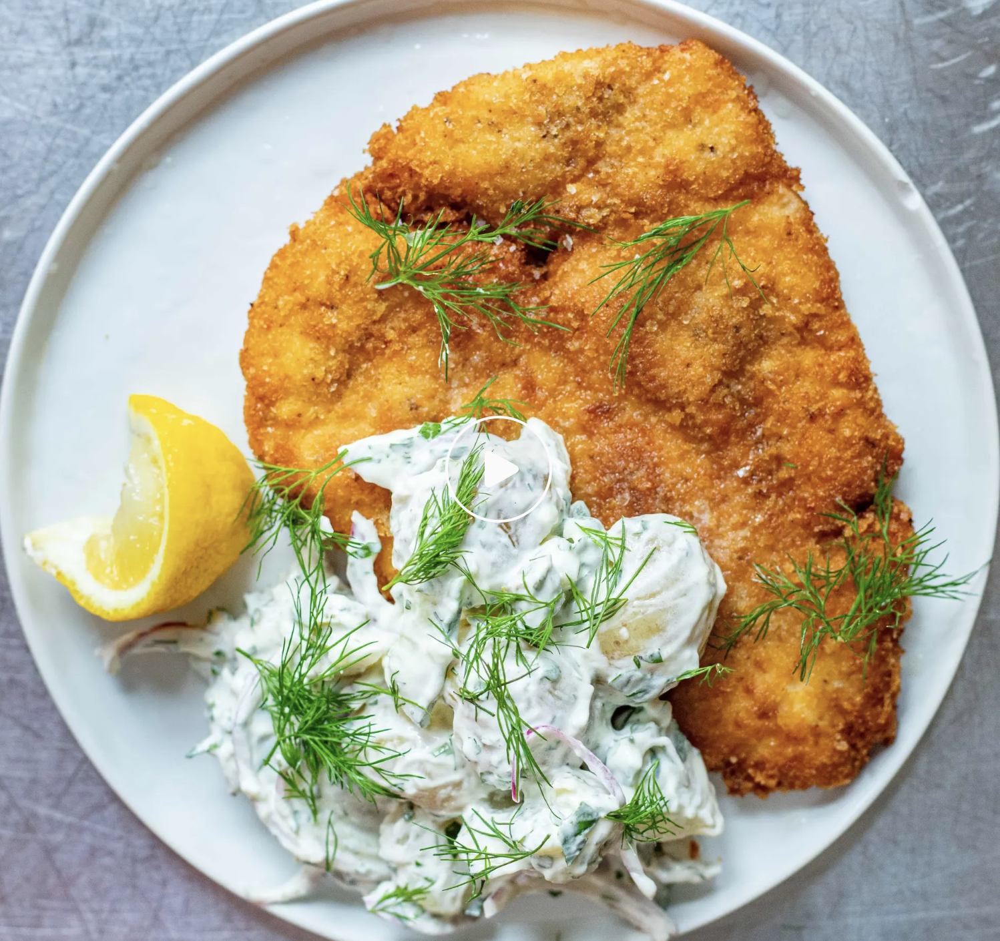

приготовление:
-
500 г бейби-картофеля положить в кастрюлю с подсоленной водой и отварить до готовности. Слить воду и оставить картофель остывать.
-
Для соуса смешать 2 ст. л. натурального йогурта и 2 ст. л. лёгкого майонеза. Мелко нарезать 4 небольших или 2 крупных маринованных огурца, 1 красную луковицу тонкими четверть-кольцами и свежий укроп и кориандр. Добавить всё в соус, выжать сок из 1/2 лимона, посолить, поперчить и перемешать.
-
Остывший картофель слегка раздавить руками, разделяя клубни примерно пополам: так соус будет лучше на них держаться. Если картофель крупноват, нарезать его небольшими кусочками. Добавить картофель в соус и аккуратно перемешать.
-
2 филе куриной грудки сделать одинаковыми по толщине: надрезать более толстую часть вдоль и раскрыть филе либо накрыть пищевой плёнкой и отбить молотком или скалкой. Толщина каждого шницеля должна быть равномерной и меньше 1 см. Посолить и поперчить с обеих сторон.
-
Налить в сковороду подсолнечное масло слоем примерно 1 см и хорошо разогреть на среднем огне.
-
Подготовить три ёмкости: с примерно 50 г пшеничной муки, 2 взбитыми яйцами и примерно 100 г панировочных сухарей. Поочерёдно обвалять каждое филе в муке, окунуть в яйца и покрыть сухарями.
-
Обжарить шницели примерно по 3–4 минуты с каждой стороны до золотистой корочки. Точное время зависит от толщины филе и температуры масла: курица должна полностью приготовиться, а температура в самой толстой части должна достигнуть 75 °C минимум на 30 секунд. Готовые шницели ненадолго выложить на бумажное полотенце.
-
Подавать куриные шницели с картофельным салатом.